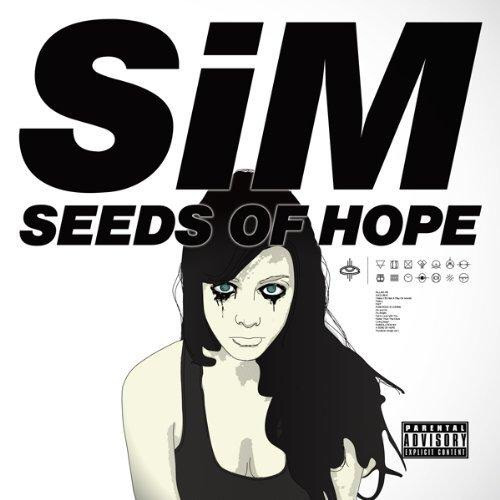
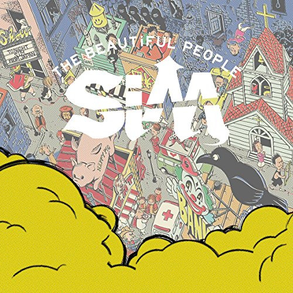
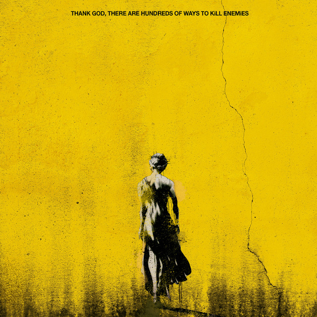
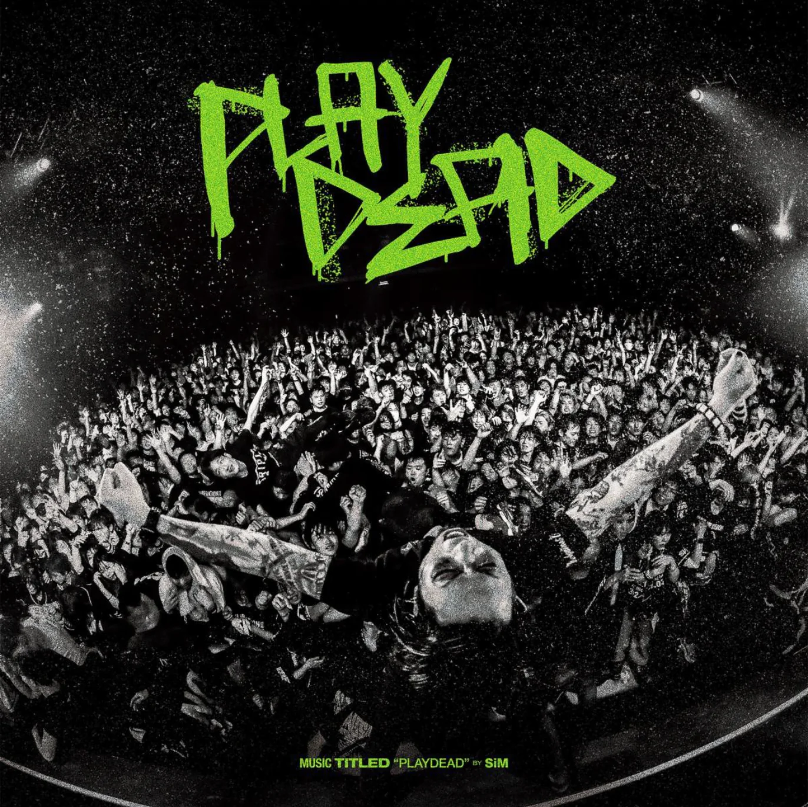

SiM (Silence iz Mine) es una banda japonesa de metal alternativo foramada durante 2004 en Shonan (Kanagawa).
Miembros de la banda
- MAH
- Name: Manabu Taniguti
- Birthday: August 5, 1986 (age 37)
- Birthplace: Kanagawa, Japan
- vocals (2004–present)
- guitars (2004–2006)
|
 |
- SHOW-HATE
- Name: Shouhei Iida
- guitars, keyboards, backing vocals (2006–present)
|
- SIN
- Name:Shinya Shinohara
- bass guitar, backing vocals (2009–present)
|
- GODRi
- Name: Yuya Taniguchi
- drums, backing vocals (2009–present)
|
Discografia
| Nombre |
Detalles |
Portada |
| Silence iz Mine |
- Publicada el 25 de junio de 2008
- Distribuido por U-Project
- Formato CD
|
 |
| Seeds of Hope |
- Publicada el 12 de octubre de 2011
- Distribuido por Gil Soundworks
- Formato CD y descarga digital
|
 |
| Pandora |
- Publicada el 23 de octubre de 2013
- Distribuido por Nayutawave Records
- Formato CD y descarga digital
|
|
| The Beautiful People |
- Publicada el 6 de abril de 2016
- Distribuido por EMI Records
- Formato CD y descarga digital
|
 |
| Thank God, There Are Hundreds Of Ways To Kill Enemies |
- Publicada el 17 de junio de 2020
- Distribuido por Universal Music Japan
- Formato CD y descarga digital
|
 |
| PLAYDEAD |
- Publicada el 27 de septiembre de 2023
- Distribuido por Pony Canyon y UNFD
- Formato CD y descarga digital
|
 |
Maria Anders |
Germany |
| Centro comercial Moctezuma |
Francisco Chang |
Mexico |
Miembros de la banda
- MAH
- Name: Manabu Taniguti
- Birthday: August 5, 1986 (age 37)
- Birthplace: Kanagawa, Japan
- vocals (2004–present)
- guitars (2004–2006)
- SHOW-HATE
- Name: Shouhei Iida
- guitars, keyboards, backing vocals (2006–present)
- SIN
- Name:Shinya Shinohara
- bass guitar, backing vocals (2009–present)
- GODRi
- Name: Yuya Taniguchi
- drums, backing vocals (2009–present)
Estilo musical
El estilo musical de SiM combina diferentes estilos como el rock alternativo, hardcore, nu metal, punk rock, ska, reggae y dub.
Se podría describir el sonido como algo similar a la banda galesa Skindred. Casi todas las letras están enteramente escritas
en inglés aunque últimamente han empezado a usar algunas frases en japonés en algunas de sus canciones.
Discografia
Sencillo
Paint Sky Blue (2007)
LET iT END (2017)
LiON'S DENS (2018)
Ligth It up (2022)
LP